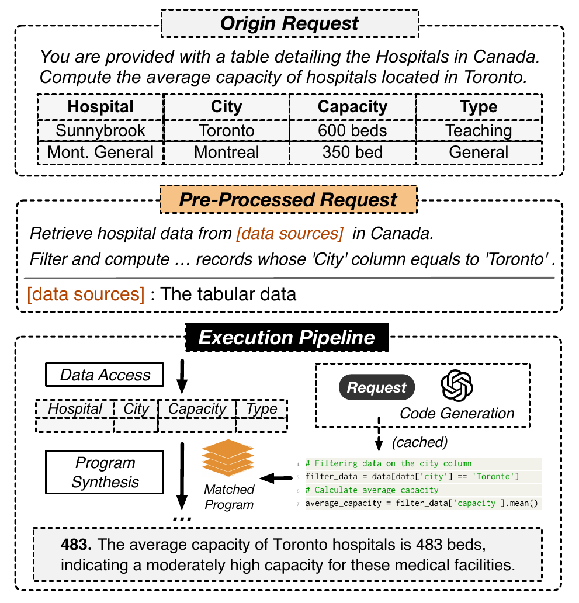

<!-- Slide 7 — Cas d'usage 2 : Data Analytics en langage naturel -->
<div class="slide">
    <div class="slide-content">
        <span class="slide-section-label">Cas d'usage 2</span>
        <h2>Data Analytics en langage naturel</h2>
        <div class="two-col">
            <div>
                <div class="highlight-box">
                    <em>"Calcule la capacité moyenne des hôpitaux de Toronto"</em>
                    <p class="inline-note">— utilisateur non-technicien, dataset hôpitaux canadiens</p>
                </div>
                <ol class="steps">
                    <li class="fragment" data-fragment-index="1"><strong>Préparation</strong> — nettoyage tabulaire (dates, doublons via Pandas)</li>
                    <li class="fragment fade-left" data-fragment-index="2"><strong>Parsing</strong> — NL → pipeline d'opérations API</li>
                    <li class="fragment fade-left" data-fragment-index="3"><strong>Génération de code</strong> — script Pandas exécutable</li>
                    <li class="fragment fade-left" data-fragment-index="4"><strong>Résultat + cache</strong> — <em>483 lits</em> · stocké en vector DB pour les requêtes futures</li>
                </ol>
            </div>
            <div>
                <div class="figure-box">
                    
                    <figcaption>Pipeline LLMDB pour l'analytics</figcaption>
                </div>
            </div>
        </div>
    </div>
</div>
